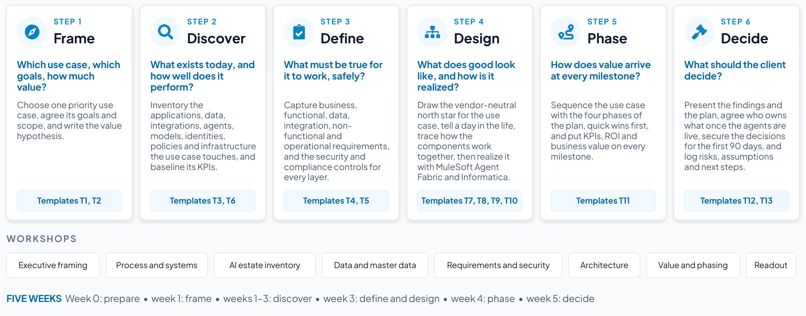

Section 1
The assessment at a glance
An AI control plane assessment takes one priority use case and, in about five weeks, turns it into a governed, phased plan that the client can fund. It answers the questions a CTO or CIO will ask: what value is at stake, what has to be true for it to work safely, what the architecture looks like, and how value arrives before the whole program is finished.
Start from a use case rather than from the platform. A real use case makes the value visible and the architecture concrete, and it gives the control plane a business case of its own. The research points the same way: organizations with strong AI foundations are three times more likely to report meaningful financial returns,79 high performers build “a repeatable capability” instead of “simply accumulating tools or pilots,”80 and successful deployments start in adjacent processes, prove clear value and then scale into core workflows.81
Adoption is outrunning governance
- Deloitte’s State of AI in the Enterprise 2026 (3,235 business and IT leaders in 24 countries, surveyed in August and September 2025): close to three-quarters of companies plan to deploy agentic AI within two years, but only 21% of them report a mature model for agent governance.7
- KPMG’s AI Quarterly Pulse for the third quarter of 2026 (314 US leaders at companies with revenue of $1 billion or more): 62% of organizations are building, deploying or developing AI agents, and 49% have set boundaries where agents may not make decisions on their own.8
- Microsoft’s Cyber Pulse report (February 2026): by Microsoft’s own telemetry, more than 80% of Fortune 500 companies use active AI agents built with low-code or no-code tools, and a survey it commissioned found that 29% of employees have turned to unsanctioned AI agents for work tasks.9
- BCG’s The Widening AI Value Gap (September 2025): only 5% of companies are “future-built” for AI while 60% report hardly any material value, and AI agents’ share of the value AI creates is expected to rise from about 17% in 2025 to 29% by 2028.10
The surveys define adoption differently, from plans to active use, so quote each on its own terms and do not present them as one trend. Read together, they show agents spreading faster than the governance around them.

| Step | The question it answers | What you do | Templates | Output |
|---|---|---|---|---|
| 1. Frame | Which use case, which goals, how much value? | Choose one priority use case, agree its goals and scope, and write the value hypothesis. | T1, T2 |
|
| 2. Discover | What exists today, and how well does it perform? | Inventory the applications, data, integrations, agents, models, identities, policies and infrastructure the use case touches, and baseline its KPIs. | T3, T6 |
|
| 3. Define | What must be true for it to work, safely? | Capture business, functional, data, integration, non-functional and operational requirements, and the security and compliance controls for every layer. | T4, T5 |
|
| 4. Design | What does good look like, and how is it realized? | Draw the vendor-neutral north star for the use case, tell a day in the life, trace how the components work together, then realize it with MuleSoft Agent Fabric and Informatica. | T7, T8, T9, T10 |
|
| 5. Phase | How does value arrive at every milestone? | Sequence the use case with the four phases of the plan, quick wins first, and put KPIs, ROI and business value on every milestone. | T11 | Phased plan with value per milestone |
| 6. Decide | What should the client decide? | Present the findings and the plan, agree who owns what once the agents are live, secure the decisions for the first 90 days, and log risks, assumptions and next steps. | T12, T13 | Readout, decisions, operating model and a 90-day plan |
What the assessment produces
- A use case at a glance, with goals, scope and a value hypothesis the business owner agrees with.
- An inventory of every asset the use case touches: applications and systems of record, data and master data, APIs and MCP tools, agents, models, identities, policies and infrastructure.
- A requirements register and the security and compliance requirements for every layer, with an autonomy tier for every agent.
- A vendor-neutral north-star architecture for the use case, a day in the life, a trace of how the components work together, and the realization with MuleSoft Agent Fabric and Informatica.
- A phased plan with KPIs, ROI and business value at every milestone, quick wins first.
- An operating model: who owns what once the agents are live, a sponsor for every agent, and the skills and adoption plan.
- A readout, a client report and the decisions for the first 90 days.
A typical five-week plan
The plan below is illustrative. A smaller opportunity can run in two weeks by combining workshops. A program with several use cases may take eight. Keep the order: framing before discovery, discovery before design, and value before the readout.
| When | Step | Activities | Templates |
|---|---|---|---|
| Week 0 | Prepare |
|
|
| Week 1 | Frame | Executive framing workshop: goals, use case choice, scope, value hypothesis. | T1, T2 (draft) |
| Weeks 1–3 | Discover |
| T3, T6 (baselines) |
| Week 3 | Define and design |
| T4, T5, T7–T10 |
| Week 4 | Phase | Value and phasing workshop with the business owner, finance and HR or the change lead: milestones, quick wins, value per milestone against published payback benchmarks, cost inputs from the project team, and the operating model. | T11, T12 (draft), T13 |
| Week 5 | Decide |
|
|
Who does what
| Role | Responsibilities in the assessment |
|---|---|
| Engagement lead | Owns the relationship with the sponsor and the engagement plan. Frames the value hypothesis, runs the value and phasing workshop with finance, and leads the readout and the decisions. |
| Lead architect | Owns the technical discovery, the asset inventory, the requirements, the security design, the north star and its realization. Presents the architecture. |
| Specialists (MuleSoft, Informatica, security) | Join the AI estate, data and architecture workshops when depth is needed. |
| Executive sponsor (client) | Sets the goals, chooses the use case and takes the decisions in the readout. |
| Business owner (client) |
|
| Enterprise architect (client) | Owns the target architecture and the standards (API-led connectivity, MCP, A2A). |
| CISO or security architect (client) | Owns the security requirements, the autonomy tiers and the approval rules. |
| Data owners and stewards (client) | Own the master data, quality rules, glossary and access policies. |
| Platform and application owners (client) | Provide interfaces, access and constraints for each system of record and AI platform. |
| Finance partner (client) | Agrees the value method, the baselines and how value is reported at each milestone. |
| HR or change lead (client) | Owns the skills and adoption plan and how roles change as agents take on work (T13). |
Principles
- Start from one real use case. Generalize to the platform afterwards. The first use case pays for the foundations the next ones reuse.
- Vendor-neutral first, then realize. Design the north star before naming products, then map every component to MuleSoft Agent Fabric, MuleSoft and Informatica capabilities. The client keeps its choice of models, agent platforms and systems of record.
- One policy point. No consumer calls a model or an enterprise capability directly. Every agent-to-model and agent-to-tool call traverses the control plane.
- People keep the accountable decisions. Agents assemble, check, draft and update, but every decision that carries professional, financial or regulatory accountability stays with a person.
- Decide which work stays human. Sort every stage into human-led, AI-assisted or AI-led before designing the agents, and record why (Section 2).
- Every agent has a sponsor and a lifecycle. From registration to retirement, with recertification on a schedule (Section 3).
- Value at every milestone. Quick wins first, then wider scope, then autonomy once the controls are proven.
- Baseline before you promise. Label every number illustrative until the client’s baseline is measured and finance agrees the method.
- Never add up use cases from different businesses. Each business case stands on its own.